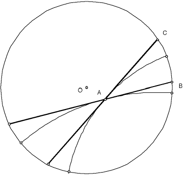

Hyperbolic angles
| To measure the angles formed by the intersection of geodesics we use the Euclidean angle measure between the tangent lines to the geodesics at the point of intersection. |
|  |
| The angle between the two geodesics is the Euclidean angle BAC. |
Return to hyperbolic geometry.